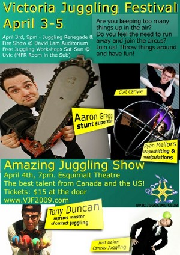

|
 |
Welcome to the Victoria Juggling Festival website! Public Show! Our big show will be An International Showcase of Juggling and the Performing Arts. This will be held Saturday, April 4 at Esquimalt High School; tickets available at the festival site a UVic, or at the door. Click here for more information on this incredible event! Workshops! Check out our tentative workshop list. Anyone who is interested in teaching a workshop, please contact us! Interested in the festival? Check out the trailer. |